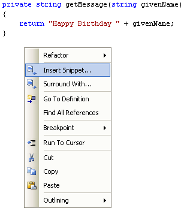
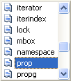
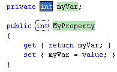
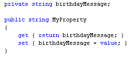

Adding Properties to your C# Classes
<< Part of an ongoing lesson - first part is here >>
You've been using properties a lot throughout this book: setting the Text property for a Textbox, setting size properties, setting font properties, etc. The way you did it in code was this:
textBox1.Text = "My Text";
So the object is called textBox1. This textBox1 object has a property called Text. To set a value for the Text property, you're typing a string between double quotes, and after an equals sign ( = ).
Behind the scenes, this property value gets handed over to a class, so that something can be done with it.
C# .NET allows you to set up your own properties, so that they can be used the same way. Let's see how it's done.
The only thing you have in your class at the moment is a private method:
private string getMessage(string givenName)
{
return "Happy Birthday " + givenName;
}
This Method can't be seen from the outside world. But that doesn't mean that it can't be used inside of the class. We'll have our property call this method.
But our property will do the following:
- Allow us to pass a value over to our class
- Allow us to get that value back out of the class
The easy way to add a property to your class is via the Insert Snippet menu. So right click just after the final curly bracket of your getMessage Method. You should see the following menu appear:

Select Insert Snippet to see the following (Visual Studio 2012 users will see another menu first, with C# on it. Double click C# to see the menu below):

Select prop from the list and C# will add this default code (Visual Studio 2012 users should select propfull from the menu instead of prop):

The code is a little bit baffling, so we'll go through what's been added.
The default code is for an integer property called MyProperty. A private integer variable has also been set up. (Variables inside of your own classes are called Fields.)
But we want to return a birthday message as a string, not as an integer. So change your property to this:

So the name of the variable outside of the property has been changed to birthdayMessage:
private string birthdayMessage;
This means that the variable will now be visible from everywhere in the class.
Note that we've also replaced myVar with birthdayMessage inside of the property.
The structure of the property is this:
public string MyProperty
{
}
This sets a property called MyProperty. You can change this to almost anything you like - it's just the same as a variable name.
Inside of the property body, you have an area that gets values out:
get { return birthdayMessage; }
And an area where you can put values in (set them):
set { birthdayMessage = value; }
The keywords get and set are used for this purpose. The value is the value you will be passing in to the property. Change the line to this:
birthdayMessage = getMessage( value );
We are now using our private getMessage Method. The value being handed over to our Method will be the value that gets handed over to the property.
(If you only need to hand values over and not get them out, then just use the set part. This is known as a write-only property. If you just want to get values out, then just use the get part. The property will then be read-only.)